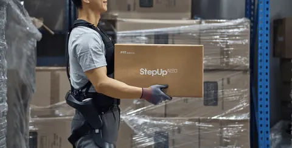
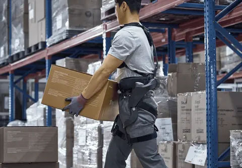
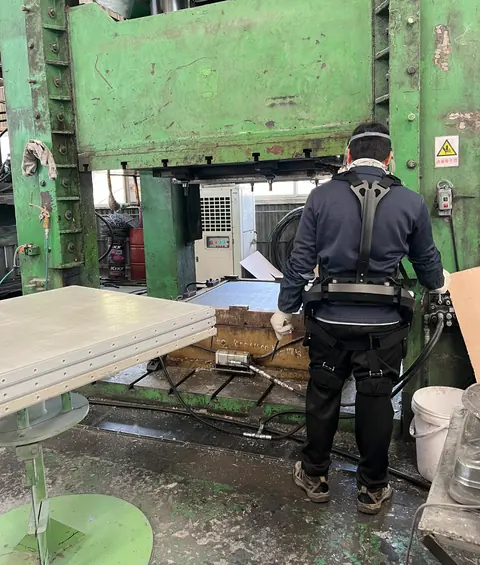
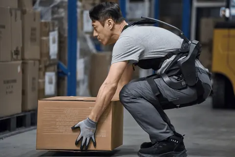

En primer bolečin v hrbtu
≈ 9 300 €≈ 3 100 € nadomestila plače, ki ga plača delodajalec + ≈ 6 200 € nadomeščanja (nadure, agencija).
KORDEX · StepUp NEO
StepUp NEO je pasivni eksoskelet za podporo hrbtu pri dvigovanju in delu v predklonu. Ocenimo ga na vaših opravilih v skladišču, proizvodnji ali logistiki.
Brezplačna predstavitev in hitra ocena obremenitve na vaši operaciji.
Zakaj meriti obremenitev
178 mio €
Povprečni letni strošek začasne odsotnosti z dela zaradi šestih izbranih mišično-skeletnih diagnoz v Sloveniji (2020–2024).
Prvih 30 delovnih dni nadomestila pri običajni bolniški odsotnosti praviloma bremeni delodajalca.
≈ 3 100 € nadomestila plače, ki ga plača delodajalec + ≈ 6 200 € nadomeščanja (nadure, agencija).
4 × 2 199 €.
Primer. Izračun KORDEX na podlagi SURS (povprečna bruto plača 2026) in Eurostat (strošek ure dela 2025). Cene brez DDV.
Zakon
Med dvižno opremo je izrecno naveden tudi eksoskelet.
Vir: Pravilnik o zagotavljanju varnosti in zdravja delavcev pri ročnem premeščanju bremen, Ur. l. RS 84/2023, 4. člen; ZVZD-1, 17. člen.
Več →Kaj je StepUp NEO
Pasivni mehanizem pomaga pri iztegovanju po predklonu. Primernost preverimo na konkretni nalogi in pri konkretnem delavcu.
Vzmetni mehanizem deluje brez motorja in elektronike.
Lahka oprema, ki jo delavec nosi med delom.
Nastavitev podporne sile glede na nalogo.
14 kgf je podporna sila za ledveni del hrbta — naprava ne dvigne 14 kg namesto delavca.
Uporaba
Po prvi prilagoditvi si ga delavec nadene sam v manj kot 30 sekundah.
Meritve proizvajalca
utrujenosti ledvenih mišic pri dvigovanju 20 kg v meritvi proizvajalca
obremenitve mišic v meritvi proizvajalca
Podatki proizvajalca (FRT Robotics, meritve EMG). Učinek na vašem delovnem mestu izmerimo pri vas.
Več →Primeri uporabe
Fotografije prikazujejo delo, ki ga predstavlja proizvajalec. Ali je naprava primerna za vašo operacijo, ugotovimo na mestu.






Kako delamo
Na vaši operaciji pokažemo StepUp NEO in hitro ocenimo obremenitev.
Po želji celovita ocena obremenitve po metodi ključnih kazalnikov (MKK) s poročilom: približno 690 € brez DDV. Ob nakupu ali najemu v treh mesecih znesek v celoti upoštevamo.
Prilagoditev naprave delavcem, usposabljanje in dogovor o uporabi.
Po šestih tednih ponovno izmerimo obremenitev na vašem delovnem mestu.
Če eksoskelet za vašo nalogo ni primeren, vam to povemo.
Cene
Cene so brez DDV. Garancija 1 leto — daje KORDEX d.o.o.
Izkušnje uporabnikov
Izjave uporabnikov proizvajalca v Koreji.
Pri ponavljajočem se sklanjanju in dvigovanju sem takoj občutil manj utrujenosti.
Uporaba je intuitivna; tudi začetniki se je hitro naučijo uporabljati.
Kljub napravi se lahko prosto premikam in delam na delovnem mestu.
Pogosta vprašanja
Ne. Breme dvigne delavec. 14 kgf je podporna sila za ledveni del hrbta, ne zmanjšanje teže bremena.
Ne. StepUp NEO je pasiven, brez baterije in motorja.
3,6 kg.
Po prvi prilagoditvi si jo delavec sam nadene v manj kot 30 sekundah.
S, M in L, približno za telesne višine 155–165, 165–175 in 175–185 cm. Pri prikazu preverimo prileganje.
Ni primerna pri motnjah ravnotežja, težavah pri hoji, resnih boleznih hrbta ali sklepov in v nosečnosti. Ob zdravstvenih vprašanjih se posvetujte z zdravnikom medicine dela.
KORDEX d.o.o. zagotavlja enoletno garancijo od nakupa.
En primer bolečin v hrbtu podjetje stane približno 9 300 €. Štirje eksoskeleti stanejo 8 796 € — manj kot 5 € na delovni dan na delavca. Najem je mogoč od 98 € na teden. Cene so brez DDV.
Dnevni znesek predpostavlja dve leti uporabe in 230 delovnih dni na leto; strošek odsotnosti je ponazoritveni primer, ne napoved za posamezno podjetje.
Brezplačna predstavitev
Povejte nam, katero opravilo želite oceniti. Odgovorimo in se dogovorimo za prikaz.